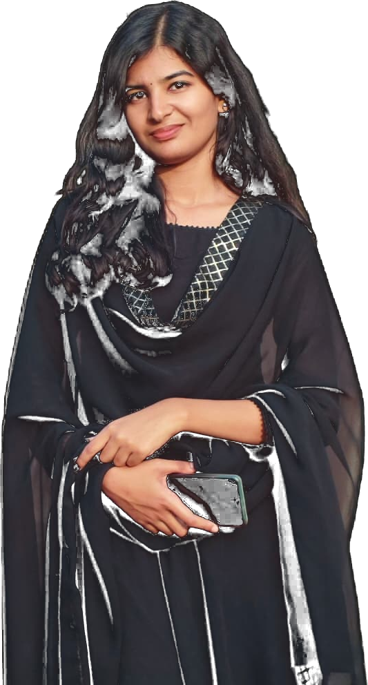

A final-year Electronics & Communication Engineering undergraduate specializing in the convergence of embedded firmware and on-device intelligence. My work is concentrated across four interdependent disciplines — Edge AI, Embedded Systems & IoT, VLSI Design, and Robotics — translating raw sensor data into real-time, actionable inference at the hardware boundary.

Four disciplines I return to consistently — each a distinct layer of the same underlying stack, from silicon to sensor to inference. Select any discipline to expand its scope.
I am a final-year B.Tech candidate in Electronics & Communication Engineering at Ahalia School of Engineering and Technology, affiliated with the APJ Abdul Kalam Technological University. My engineering interests are situated at the confluence of hardware and computational intelligence — specifically, sensor instrumentation, embedded firmware architecture, and the deployment of machine learning inference at the edge.
My project portfolio spans predictive maintenance systems, digital-twin health monitoring, and VLSI logic design, each documented comprehensively from schematic conception through deployed implementation. Beyond the laboratory, I engage in competitive public speaking and pursue portrait, documentary, and wildlife photography across the Kerala landscape.
The instruments, languages, and platforms I employ to advance a concept from breadboard prototype to deployed firmware.
Each project pairs a substantive sensing problem with an on-device or connected intelligence layer. Select any build to review its complete technical scope.
Architected and deployed Predicta in its entirety — encompassing sensor integration, on-device LSTM inference, and a live Progressive Web Application dashboard. Concurrently contributed to FireGuard, a collaboratively engineered gas and fire detection system. This engagement provided substantive exposure to hardware implementation practices, technical documentation standards, and structured testing methodologies.
Engineered and formally verified a 32-bit Arithmetic Logic Unit in Verilog HDL using Xilinx Vivado, constructing a self-checking testbench methodology and presenting the completed design for external technical evaluation.
A competitive Malayalam-language orator and English extemporaneous speaking champion, recognized with a first-place distinction at the school level.
Practices portrait, cinematic reel, and wildlife photography and videography across the diverse landscapes of Kerala.
Pursues independent exploration of sensing and actuation systems beyond formal coursework — the nascent stage of an evolving robotics practice.